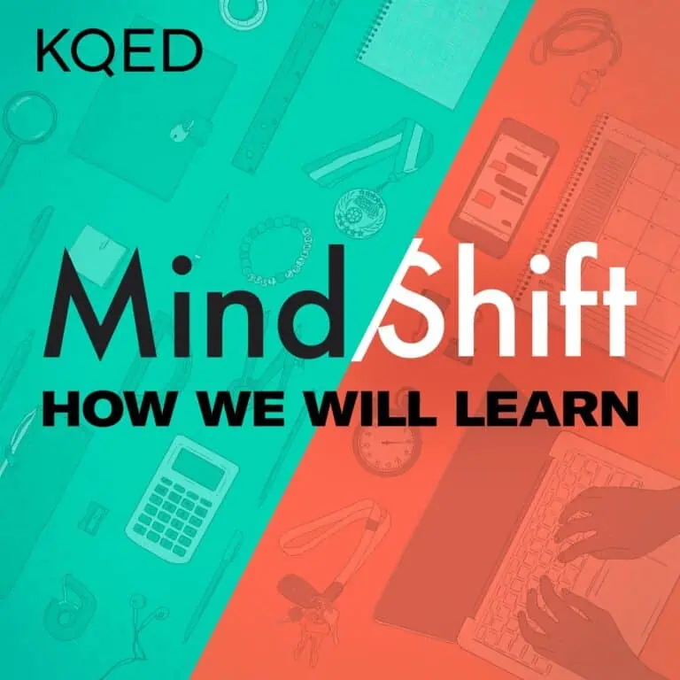

MindShift by KQED

MindShift by KQED is one of the best education podcasts for several reasons. Firstly, the podcast covers a wide range of topics related to education, such as teaching strategies, educational technology, student wellbeing, and equity in education. They present actionable ideas and strategies that educators can implement in their own classrooms or educational settings.
Secondly, the podcast features a diverse range of guests, including educators, researchers, and thought leaders in the field of education. It’s engaging and well-produced, making it an enjoyable listening experience.
Finally, the podcast is committed to exploring innovative and creative approaches to education, making it a valuable resource for educators who are looking to stay up-to-date with the latest trends and ideas in the field.